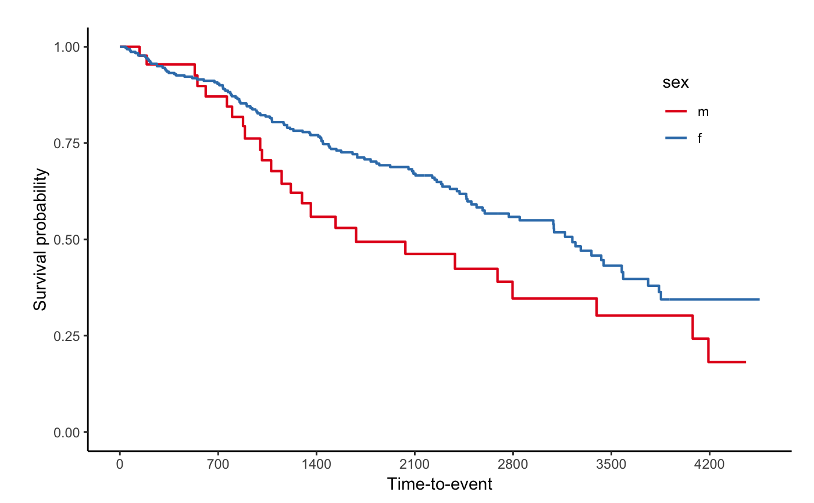

R/svyjskm.R
svyjskm.RdCreates a Weighted Kaplan-Meier plot - svykm.object in survey package
svyjskm( sfit, theme = NULL, xlabs = "Time-to-event", ylabs = "Survival probability", xlims = NULL, ylims = c(0, 1), ystratalabs = NULL, ystrataname = NULL, surv.scale = c("default", "percent"), timeby = NULL, main = "", pval = FALSE, pval.size = 5, pval.coord = c(NULL, NULL), pval.testname = F, med = FALSE, legend = TRUE, legendposition = c(0.85, 0.8), ci = NULL, linecols = "Set1", dashed = FALSE, cumhaz = F, design = NULL, subs = NULL, table = F, table.censor = F, label.nrisk = "Numbers at risk", size.label.nrisk = 10, cut.landmark = NULL, showpercent = F, linewidth = 0.75, nejm.infigure.ratiow = 0.6, nejm.infigure.ratioh = 0.5, nejm.infigure.ylim = c(0, 1), surv.by = NULL, ... )
| sfit | a svykm object |
|---|---|
| theme | Theme of the plot, Default = NULL, "nejm" for NEJMOA style, "jama" for JAMA style |
| xlabs | x-axis label, Default: 'Time-to-event' |
| ylabs | y-axis label. |
| xlims | numeric: list of min and max for x-axis. Default: NULL |
| ylims | numeric: list of min and max for y-axis. Default: c(0, 1) |
| ystratalabs | character list. A list of names for each strata. Default: NULL |
| ystrataname | The legend name. Default: 'Strata' |
| surv.scale | scale transformation of survival curves. Allowed values are "default" or "percent". |
| timeby | numeric: control the granularity along the time-axis; defaults to 7 time-points. |
| main | plot title, Default: '' |
| pval | logical: add the pvalue to the plot?, Default: FALSE |
| pval.size | numeric value specifying the p-value text size. Default is 5. |
| pval.coord | numeric vector, of length 2, specifying the x and y coordinates of the p-value. Default values are NULL |
| pval.testname | logical: add '(Log-rank)' text to p-value. Default = F |
| med | should a median line be added to the plot? Default = F |
| legend | logical. should a legend be added to the plot? |
| legendposition | numeric. x, y position of the legend if plotted. Default=c(0.85,0.8) |
| ci | logical. Should confidence intervals be plotted. Default = NULL |
| linecols | Character or Character vector. Colour brewer pallettes too colour lines. Default ="Set1", "black" for black with dashed line, character vector for the customization of line colors. |
| dashed | logical. Should a variety of linetypes be used to identify lines. Default: FALSE |
| cumhaz | Show cumulaive incidence function, Default: F |
| design | Data design for reactive design data , Default: NULL |
| subs | = NULL, |
| table | logical: Create a table graphic below the K-M plot, indicating at-risk numbers? |
| table.censor | logical: Add numbers of censored in table graphic |
| label.nrisk | Numbers at risk label. Default = "Numbers at risk" |
| size.label.nrisk | Font size of label.nrisk. Default = 10 |
| cut.landmark | cut-off for landmark analysis, Default = NULL |
| showpercent | Shows the percentages on the right side. |
| linewidth | Line witdh, Default = 0.75 |
| nejm.infigure.ratiow | Ratio of infigure width to total width, Default = 0.6 |
| nejm.infigure.ratioh | Ratio of infigure height to total height, Default = 0.5 |
| nejm.infigure.ylim | y-axis limit of infigure, Default = c(0,1) |
| surv.by | breaks unit in y-axis, default = NULL(ggplot default) |
| ... | PARAM_DESCRIPTION |
plot
DETAILS
library(survey)#>#>#> #>#> #> #>data(pbc, package = "survival") pbc$randomized <- with(pbc, !is.na(trt) & trt > 0) biasmodel <- glm(randomized ~ age * edema, data = pbc) pbc$randprob <- fitted(biasmodel) dpbc <- svydesign(id = ~1, prob = ~randprob, strata = ~edema, data = subset(pbc, randomized)) s1 <- svykm(Surv(time, status > 0) ~ sex, design = dpbc) svyjskm(s1)